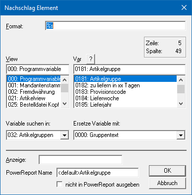
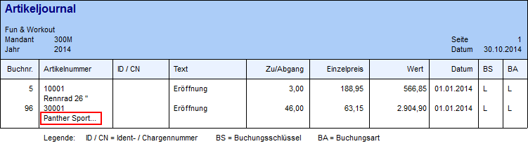

Ø Nachschlag-Element
Ein Nachschlag-Element dient dazu, eine Referenz von einer Variable zu einer anderen Variable, die im direkten Zusammenhang stehen, aufzubauen. Dazu stehen im Programm bestimmte, immer wieder verwendete Datenbereiche (gecashte Tabellen) permanent zur Verfügung. Diese Datenbereiche sind
ü die Fremdwährungen
ü der Unternehmensstamm
ü die Steuerleisten
ü die Artikelgruppen
ü der Vertreterstamm
ü die FIBU-Buchungsarten
ü die Periodeneinstellungen
ü die Mahnparameter
ü die Vertretergruppen
ü die Rabattleisten
ü die Zahlungskonditionen
ü die Kostenstellen
ü die Kostenarten
ü die Kostenträger
ü die Einheiten (für Kostenrechnung)
ü der Bankenstamm/ die Zahlungsarten
ü die Ausprägungsinformationen
ü die Artikeluntergruppen
ü die Buchungskreise
ü die Colli-Informationen
ü die Packstoffarten
ü die Kundengruppen
ü die Buchungsschlüssel
ü die Steuerkennzeichen
ü B/N/F-Kennzeichen
ü die Lagerbuchungsarten
ü Variable / Konstante (in Bezug auf Buchungsarten)
ü Eingabe / Automatik / Sperre (in Bezug auf Buchungsarten)
Beispiel
In der Statistik wird immer nur die Vertreternummer gespeichert. Da die Vertreternummer aber nicht aussagekräftig ist, soll der Vertretername angedruckt werden. Dazu wird die Vertreternummer aus der Statistik mit dem Vertreternamen aus den Vertreterstammdaten verbunden.
Eigenschaftsfenster "Nachschlag Element"
Über das Eigenschaftsfenster "Nachschlag Element" können die Verbindung zwischen 2 Variablen definiert werden.

Ø Format
Bestimmt das Darstellungsformat des Nachschlag Elements im Ausdruck. Dabei gibt es unterschiedliche Varianten:
ü %s
Mit diesem Format (Standard)
wird das Element in der Länge angedruckt, wie sie auch in der Datenbank
gespeichert ist.
ü %s {W:15}
Mit diesem Format
wird das Element mit einer maximalen Länge (hier "15") ausgedruckt bzw.
dargestellt. Wenn es bei der Ausgabe zu einer Beschränkung kommt, dann wird
hierauf durch drei Punkte am Ende des gedruckten Bereichs aufmerksam
gemacht.
Beispiel

ü Vertreter %s
Bei diesem Format
wird vor das Element ein fester Text (hier "Vertreter") geschrieben. Natürlich
kann solch ein Text auch hinter oder vor und hinter die Variable "%s" gesetzt
werden.
Hinweis
Auch wenn das Nachschlag Element keinen Wert zurückliefert und somit nichts gedruckt / angezeigt werden müsste, so wird der statische Text trotzdem ausgegeben.
Ø View / Var
Über die Auswahllisten kann die View (d.h. die SQL-Tabelle)
und die Variable (d.h. die SQL-Spalte in einer Tabelle) bestimmt werden, anhand
derer ein Verweis zu einer gecashten Tabelle aufgebaut werden soll. Mit Hilfe
des Icons  kann das Fenster
"Variable suchen" geöffnet werden. In diesem ist es möglich per Volltextsuche
nach Variablen zu suchen.
kann das Fenster
"Variable suchen" geöffnet werden. In diesem ist es möglich per Volltextsuche
nach Variablen zu suchen.
Hinweis
Weitere Information entnehmen Sie bitte dem Kapitel Einfügen von Variablen.
Ø Variable suchen in
Hier wird der Datenbereich ausgewählt, aus dem eine alternative Variable angedruckt werden soll.
Ø Ersetze Variable mit
Aus der Tabelle wird die Variable gewählt, die anstelle der zuerst angeführten Variable angedruckt werden soll (z.B. der Vertretername).
Ø Anzeige
Im Eingabefeld "Anzeige" können Informationen im Klartext hinterlegen werden um das Formular besser lesbar zu machen. Statt der Variablen wird der hier eingetragene Text auf dem Bildschirm angezeigt. Der Eintrag hat aber keinerlei Auswirkungen auf den Andruck der Variablen und wird nach dem Schließen des WinLine Formular Editors gelöscht (ist beim nächsten Aufruf nicht mehr sichtbar).
Ø PowerReport Name
An dieser Stelle kann der Name für die Anzeige innerhalb des Power Reports angepasst werden. Im Standard wird der Name der Variable übergeben.
Ø nicht in PowerReport ausgegeben
Mit Hilfe dieser Checkbox definiert werden, ob die Daten des Nachschlag-Elements im Power Report zur Verfügung stehen sollen oder nicht.
Hinweis
Grundsätzlich werden nur Variablen aus dem Mittelteilsbereich an den Power Report übergeben.